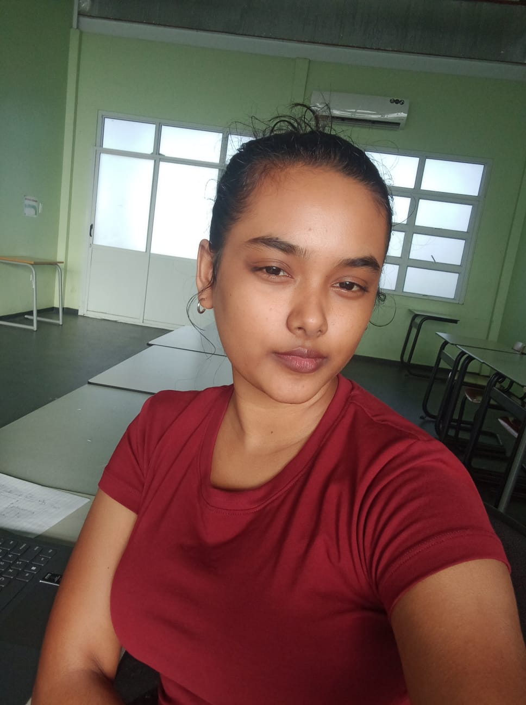

Hello, I'm Roshni
Web Developer & Student

Web Developer & Student

Ik ben een enthousiaste HBO ICT student met een focus op web development. Ik heb een passie voor het bouwen van mooie en functionele websites en het leren van nieuwe technologieën.
Ik hou van experimenteren met React, Tailwind en moderne frontend tools. Mijn doel is om mezelf steeds verder te ontwikkelen en mijn kennis te delen.
Ik heb ervaring opgedaan met het solliciteren naar remote callcenter operator rollen, waarbij ik mijn communicatieve vaardigheden en technische kennis combineerde. Dit gaf mij inzicht in professionele workflows en klantgericht werken.
Mijn persoonlijke portfolio gebouwd met HTML en CSS, waarin ik mijn creativiteit en gevoel voor design laat zien.
Ontwikkeld en gestyled met moderne frontend technieken. Inclusief routing en debugging van imports. Dit project toont mijn vaardigheid in het oplossen van frontend problemen.
Kleine projecten waarin ik experimenteer met React componenten en Tailwind styling om moderne UI's te bouwen.